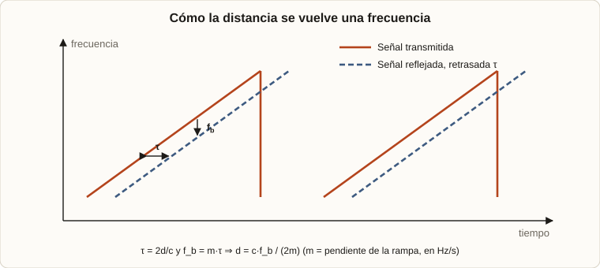
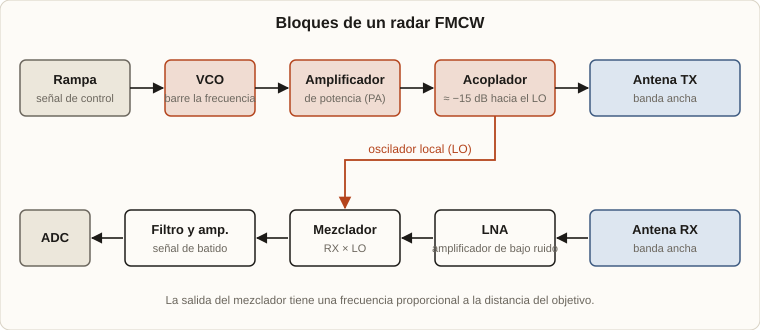
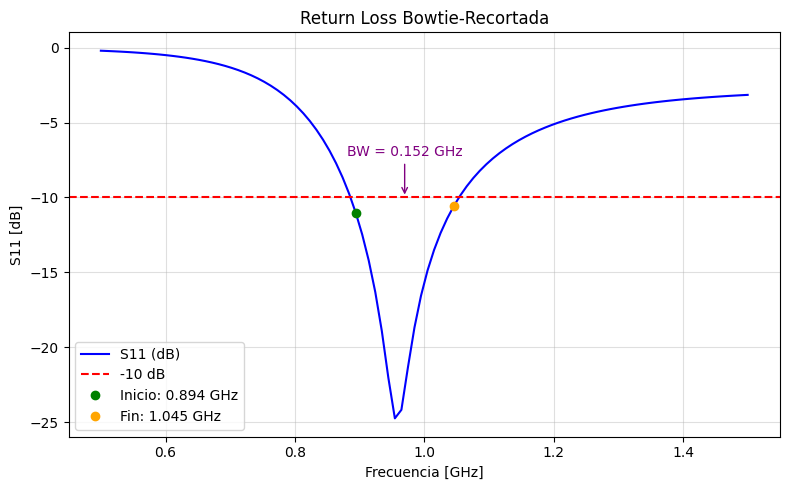
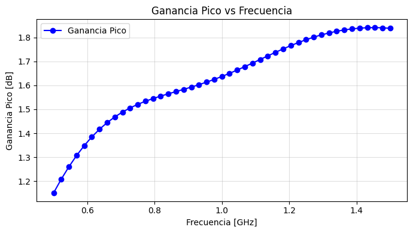
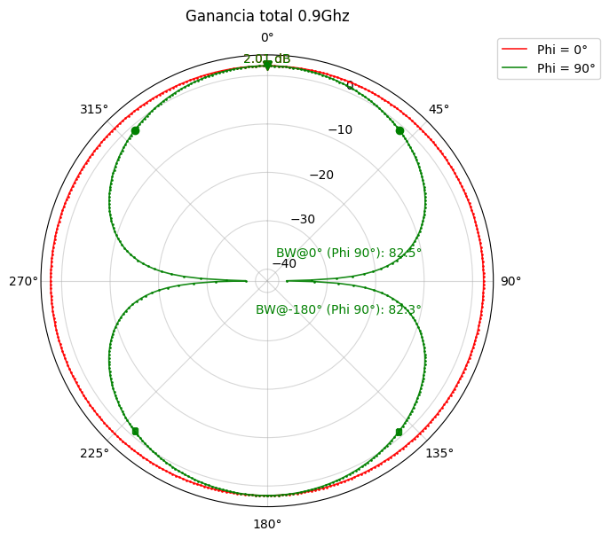
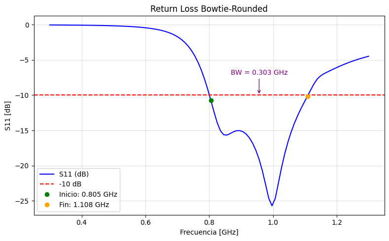
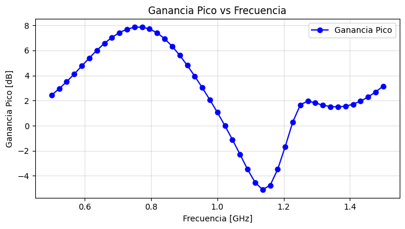
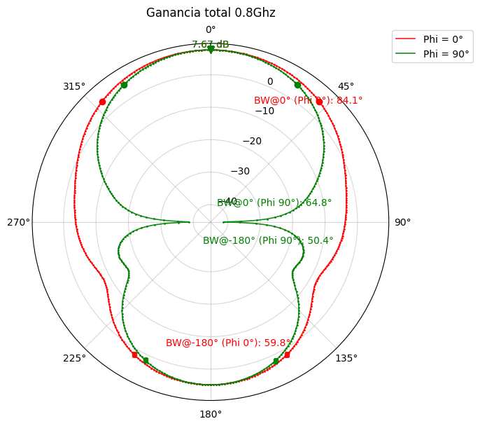
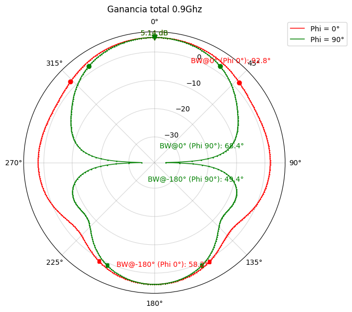

2025 · Radar FMCW · Antenas · Ansys Electronics
Una antena direccional para un radar tipo Coffee Can
El proyecto principal del grupo de investigación era construir un radar tipo Coffee Can Radar: un radar de onda continua que mide la posición y la velocidad de un objeto a partir del retardo entre la onda que sale y la onda reflejada que vuelve. Mi parte dentro del proyecto fue la antena: diseñar una antena direccional que mejorara la focalización del sistema.
1. Qué es el radar
2. Cómo mide: de la onda continua al FMCW
3. Los bloques del radar
4. Mi parte: la antena
5. Primer diseño: bowtie recortada
6. Segundo diseño: bowtie con reflector y metamaterial
7. Comparación
8. Cómo lo simulé
1. Qué es el radar
El sistema está inspirado en el Coffee Can Radar (el nombre viene de las antenas de lata de café de la versión original, del MIT) y en el Rabbit Radar. El objetivo del proyecto es tener un radar que pueda ser diseñado y construido por un grupo de cuatro o cinco estudiantes. Trabaja alrededor de 1 GHz, y esa decisión tiene varias razones:
- Es una banda ISM, de uso libre.
- Permite fabricar fácilmente las líneas de transmisión de microondas (un cuarto de onda mide unos 40 mm sobre la placa).
- Se pueden soldar a mano los componentes discretos de terminación y polarización de los amplificadores.
2. Cómo mide: de la onda continua al FMCW
El principio de cualquier radar es emitir una señal electromagnética y medir su reflejo en un objetivo. El reflejo existe porque la superficie metálica dispersa energía en todas las direcciones, y el radar recibe una pequeña parte.
Onda continua simple: velocidad sí, distancia ambigua
El radar más simple emite una onda continua y compara la señal reflejada con la emitida. Como las dos tienen la misma frecuencia, solo difieren en la fase, y de ahí solo se puede estimar la distancia con una ambigüedad:
donde n es cualquier entero, λ la longitud de onda y φ la diferencia de fase. La distancia podría ser cualquier múltiplo entero de la longitud de onda, y además el sistema es sensible a los retardos de fase del hardware y a los caminos múltiples. En cambio, la velocidad sí se mide bien con este radar simple, gracias al efecto Doppler: el objeto en movimiento desplaza la frecuencia de la onda reflejada.
FMCW: modular la frecuencia
La solución a la ambigüedad es un radar de onda continua modulada en frecuencia (FMCW): en lugar de emitir una frecuencia fija, se barre la frecuencia con una rampa. Cuando la señal vuelve del objetivo, el oscilador ya cambió de frecuencia, así que la señal recibida llega con una frecuencia distinta de la que se está transmitiendo en ese instante. Esa diferencia mide el retardo, y por lo tanto la distancia absoluta, sin ambigüedad:
donde m es la pendiente de la rampa de frecuencia, en Hz/s. El retardo Δt es el tiempo de ida y vuelta, de ahí el factor 2.

Dos resultados prácticos salen de ahí. La frecuencia de batido es fb = m·τ = 2·m·d/c, así que despejando se obtiene la distancia. Y la resolución en distancia depende del ancho del barrido B: ΔR = c/(2B). Con un barrido de 100 MHz, por ejemplo, serían 1,5 m. Por eso el ancho de banda importa tanto, y se vuelve a ver en la antena.
Veamos cómo se ordena todo esto en un circuito.
3. Los bloques del radar
Un oscilador controlado por tensión (VCO) es barrido entre dos frecuencias por una rampa lineal. Su señal pasa por un amplificador de potencia (PA) y después por un acoplador que la divide: la mayor parte va a la antena transmisora y una fracción, unos 15 dB por debajo, se usa como oscilador local (LO). La antena receptora alimenta un amplificador de bajo ruido (LNA), y un mezclador combina esa señal con el LO y la baja a banda base. Se filtra y amplifica, y esa señal de batido es la que se mide.

Una nota de diseño: la relación entre tensión y frecuencia de un VCO no es lineal, por lo que una rampa lineal de control no da un barrido de frecuencia perfectamente lineal. Para un diseño de primer orden, esto se ignora.
En el diseño de referencia del radar, las antenas de transmisión y recepción son Vivaldi antípodas, fáciles de construir y de banda ancha. Mi tarea fue explorar una antena distinta, pensada para ganar direccionalidad.
4. Mi parte: la antena
El objetivo fue elaborar una antena direccional para mejorar la focalización: que la energía se concentre en la dirección del objetivo en vez de repartirse en todas partes.
Qué se le pide a la antena
Según los papers que me dieron, este tipo de antenas se usa mucho en GPR (Ground Penetrating Radar), y los requisitos se traducen así:
| Parámetro | Qué determina |
|---|---|
| Frecuencia | La profundidad de penetración. Los objetos a medir suelen ser heterogéneos y con pérdidas, y a frecuencias más altas se obtiene mayor precisión. |
| Ancho de banda | La precisión (en un FMCW, la resolución en distancia). |
| Ganancia | Que sea alta: cuánto se concentra la energía en la dirección útil. |
Uno de los papers lista los tipos de antena que cumplen estos requisitos: dipolos, antenas TEM tipo Vivaldi, bowtie, hélices planares y antenas de arco. De las bowtie dice que se usan en radares de amplio rango por su buena pérdida de retorno, alta ganancia, impedancia y estabilidad del diagrama de radiación.
Las opciones
Entre las candidatas, las dos más recomendables eran la Vivaldi y la bowtie. La Vivaldi rinde mejor, pero es más compleja de construir. De la bowtie tenía varios papers que estudian el diseño, lo simulan, lo arman y lo comparan. Me decidí por una bowtie modificada, combinando ideas de dos de esos trabajos:
- "A 900 MHz Shielded Bow-tie Antenna System for Ground Penetrating Radar" (Chen Guo y Richard C. Liu): me enseñó a centrar la antena en frecuencias cercanas a la de trabajo mediante recortes en los extremos de la bowtie.
- "Directional and High-Gain Ultra-Wideband Bow-Tie Antenna for Ground-Penetrating Radar Applications" (Shuai Pi, Tianhao Wang y Jun Lin): me enseñó a usar metamateriales para mejorar la ganancia y la direccionalidad.
Una bowtie (corbata de moño) es un dipolo plano formado por dos brazos triangulares, alimentado en el centro por el espacio entre ellos (port gap). Su forma le da un ancho de banda grande. Un metamaterial es una estructura artificial, periódica, que se comporta ante las ondas con propiedades que no tienen los materiales comunes y que aquí se usa para concentrar la radiación hacia adelante.
5. Primer diseño: bowtie recortada
Siguiendo el artículo de 900 MHz, diseñé primero una bowtie simple con recortes en los extremos, que modifican tanto el ancho de banda como la frecuencia central. El diseño inicial salió del asistente (wizard) de Ansys Electronics y después ajusté a mano los parámetros hasta llevar la frecuencia central a la deseada.
| Parámetro | Valor |
|---|---|
| Inner_Width | 2,7 mm |
| Outer_Width | 46,4 mm |
| Arm_Length | 51,5 mm |
| Port_Gap | 2,7 mm |
| PCB FR4 | 1,575 mm de espesor, 170 × 170 mm |


La pérdida de retorno (S11) mide cuánta potencia se refleja de vuelta hacia el generador en lugar de radiarse. Con S11 por debajo de −10 dB, solo se refleja el 10 % de la potencia, y el rango de frecuencias donde eso ocurre se toma como el ancho de banda de la antena. La bowtie recortada queda bien centrada (con un mínimo de unos −25 dB cerca de 0,96 GHz), pero con poco ancho de banda y poca ganancia.

El diagrama de radiación muestra el problema de fondo: radia casi igual hacia los dos lados. La mitad de la energía se va en la dirección contraria a la del objetivo. Era el punto de partida para mejorar.
6. Segundo diseño: bowtie con reflector y metamaterial
El segundo diseño es una bowtie de brazos redondeados a la que se le agregan dos elementos para ganar direccionalidad, siguiendo el paper de la antena direccional de alta ganancia:
- Un plano reflector de cobre, que devuelve hacia adelante la energía que iba hacia atrás.
- Un plano de metamaterial, que ayuda a concentrar la radiación, aumentar la ganancia y ampliar el ancho de banda.
La antena quedó con tres partes: la bowtie sobre la placa FR4, el plano reflector y el metamaterial. Para llegar a los valores finales probé muchas combinaciones, variando las distancias y las formas de ambos planos. Los diseños sin estos aditamentos rendían de forma similar al primero.
| Parte | Parámetro | Valor |
|---|---|---|
| Antena | Inner_Width | 1,8 mm |
| Outer_Width | 44,3 mm | |
| Arm_Length | 36,9 mm | |
| Outer_Radius | 24,4 mm | |
| Port_Gap | 1,8 mm | |
| FR4 | Espesor | 1,575 mm |
| Tamaño | 150 × 150 mm | |
| Distancia FR4 – plano reflector | 150 mm | |
| Distancia FR4 – metamaterial | 130 mm | |
| Metamaterial | D1 | 60 mm |
| D2 | 59 mm | |
| D3 | 10 mm |




7. Comparación
| Bowtie recortada | Bowtie + reflector + metamaterial | |
|---|---|---|
| Ancho de banda (S11 < −10 dB) | 0,152 GHz (0,894 – 1,045 GHz) | 0,303 GHz (0,805 – 1,108 GHz): el doble |
| Ganancia pico | ≈ 1,2 a 1,8 dB | ≈ 7,8 dB cerca de 0,78 GHz; ≈ 5 dB a 0,9 GHz |
| Ancho del haz principal | ≈ 82° (a 0,9 GHz) | ≈ 65° (a 0,8 y 0,9 GHz) |
| Radiación hacia adelante y hacia atrás | Casi igual | Predomina hacia adelante, con un lóbulo trasero que sigue siendo apreciable |
Con el reflector y el metamaterial, el ancho de banda se duplicó, la ganancia subió varios decibeles y el haz se hizo más angosto: la antena quedó más direccional, que era el objetivo. Dos cosas a tener en cuenta: la mejora de ganancia es mayor en la parte baja de la banda y cae hacia 1,1 GHz, y el lóbulo trasero no desaparece por completo.
8. Cómo lo simulé
Todas las simulaciones las hice en Ansys Electronics (la versión para estudiantes), y la calibración de cada variable fue por simulación: cambiar un parámetro, simular y comparar. Los datos de cada corrida (pérdida de retorno, ganancia, diagramas de radiación e impedancia de entrada) se exportaron y se graficaron en un notebook de Jupyter con Python, que es de donde salen las gráficas de esta página.
El informe completo con los resultados está en el repositorio del proyecto: Informe_antena.ipynb. La introducción teórica del radar está en Introducción.ipynb.